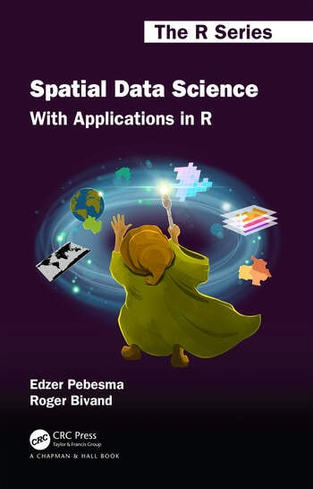

Spatial Data Science
With Applications in R
![]()
Preface
Data science is concerned with finding answers to questions on the basis of available data, and communicating that effort. Besides showing the results, this communication involves sharing the data used, but also exposing the path that led to the answers in a comprehensive and reproducible way. It also acknowledges the fact that available data may not be sufficient to answer questions, and that any answers are conditional on the data collection or sampling protocols employed.
This book introduces and explains the concepts underlying spatial data: points, lines, polygons, rasters, coverages, geometry attributes, data cubes, reference systems, as well as higher-level concepts including how attributes relate to geometries and how this affects analysis. The relationship of attributes to geometries is known as support, and changing support also changes the characteristics of attributes. Some data generation processes are continuous in space, and may be observed everywhere. Others are discrete, observed in tesselated containers. In modern spatial data analysis, tesellated methods are often used for all data, extending across the legacy partition into point process, geostatistical and lattice models. It is support (and the understanding of support) that underlies the importance of spatial representation. The book aims at data scientists who want to get a grip on using spatial data in their analysis. To exemplify how to do things, it uses R. In future editions we hope to extend this with examples using Python (see, e.g., Bivand 2022a) and Julia.
It is often thought that spatial data boils down to having observations’ longitude and latitude in a dataset, and treating these just like any other variable. This carries the risk of missed opportunities and meaningless analyses. For instance,
- coordinate pairs really are pairs, and lose much of their meaning when treated independently
- rather than having point locations, observations are often associated with spatial lines, areas, or grid cells
- spatial distances between observations are often not well represented by straight-line distances, but by great circle distances, distances through networks, or by measuring the effort it takes getting from A to B
We introduce the concepts behind spatial data, coordinate reference systems, spatial analysis, and introduce a number of packages, including sf (Pebesma 2018, 2022a), stars (Pebesma 2022b), s2 (Dunnington, Pebesma, and Rubak 2023) and lwgeom (Pebesma 2023), as well as a number of spatial tidyverse (Wickham et al. 2019; Wickham 2022) extensions, and a number of spatial analysis and visualisation packages that can be used with these packages, including gstat (Pebesma 2004; Pebesma and Graeler 2022), spdep (Bivand 2022b), spatialreg (Bivand and Piras 2022), spatstat (Baddeley, Rubak, and Turner 2015; Baddeley, Turner, and Rubak 2022), tmap (Tennekes 2018, 2022) and mapview (Appelhans et al. 2022).
Like data science, spatial data science seems to be a field that arises bottom-up in and from many existing scientific disciplines and industrial activities concerned with application of spatial data, rather than being a sub-discipline of an existing scientific discipline. Although there are various activities trying to scope it through focused conferences, symposia, chairs and study programs, we believe that the versatility of spatial data applications and questions will render such activity hard. Giving this book the title “spatial data science” is not another attempt to define the bounds of this field but rather an attempt to contribute to it from our 3-4 decades of experience working with researchers from various fields willing to publicly share research questions, data, and attempts to solve these questions with software. As a consequence, the selection of topics found in this book has a certain bias towards our own areas of research interest and experience. Platforms that have helped create an open research community include the ai-geostats and r-sig-geo mailing lists, sourceforge, r-forge, GitHub, and the OpenGeoHub summer schools organized yearly since 2007. The current possibility and willingness to cross data science language barriers opens a new and very exciting perspective. Our motivation to contribute to this field is a belief that open science leads to better science, and that better science might contribute to a more sustainable world.
Printed version of this book

The printed version of this book (1st edition) is available from the Routeledge/CRC or Taylor and Francis websites. Cover art was created by Allison Horst.
Citing this book
The full reference is: Pebesma, E.; Bivand, R. (2023). Spatial Data Science: With Applications in R (1st ed.). 314 pages. Chapman and Hall/CRC, Boca Raton. https://doi.org/10.1201/9780429459016
BibTeX:
@book{sds,
author = {Edzer Pebesma and Roger Bivand},
year = 2023,
title = {Spatial Data Science: With Applications in {R}},
publisher = {Chapman and Hall/CRC},
address = {Boca Raton},
URL = {https://doi.org/10.1201/9780429459016},
doi = {10.1201/9780429459016}
}Acknowledgements
We are grateful to the entire r-spatial community, especially those who
- developed r-spatial packages or contributed to their development,
- contributed to discussions on twitter and Mastodon
#rspatial, or on GitHub, - brought comments or asked questions in courses, summer schools, or conferences.
We are in particular grateful to Dewey Dunnington for implementing the s2 package, and for active contributions from Sahil Bhandari, Jonathan Bahlmann for preparing the figures in 6 Data Cubes, Claus Wilke, Jakub Nowosad, the “Spatial Data Science with R” classes of 2021 and 2022, and to those who actively contributed with GitHub issues, pull requests, or discussions:
- to the book repository (Nowosad, jonathom, JaFro96, singhkpratham, liuyadong, hurielreichel, PPaccioretti, Robinlovelace, Syverpet, jonas-hurst, angela-li, ALanguillaume, florisvdh, ismailsunni, andronaco),
- to the sf repository (aecoleman, agila5, andycraig, angela-li, ateucher, barryrowlingson, bbest, BenGraeler, bhaskarvk, Bisaloo, bkmgit, christophertull, chrisyeh96, cmcaine, cpsievert, daissi, dankelley, DavisVaughan, dbaston, dblodgett-usgs, dcooley, demorenoc, dpprdan, drkrynstrng, etiennebr, famuvie, fdetsch, florisvdh, gregleleu, hadley, hughjonesd, huizezhang-sherry, jeffreyhanson, jeroen, jlacko, joethorley, joheisig, JoshOBrien, jwolfson, kadyb, karldw, kendonB, khondula, KHwong12, krlmlr, lambdamoses, lbusett, lcgodoy, lionel-, loicdtx, marwahaha, MatthieuStigler, mdsumner, MichaelChirico, microly, mpadge, mtennekes, nikolai-b, noerw, Nowosad, oliverbeagley, Pakillo, paleolimbot, pat-s, PPaccioretti, prdm0, ranghetti, rCarto, renejuan, rhijmans, rhurlin, rnuske, Robinlovelace, robitalec, rubak, rundel, statnmap, thomasp85, tim-salabim, tyluRp, uribo, Valexandre, wibeasley, wittja01, yutannihilation, Zedseayou),
- to the stars repository (a-benini, ailich, ateucher, btupper, dblodgett-usgs, djnavarro, ErickChacon, ethanwhite, etiennebr, flahn, floriandeboissieu, gavg712, gdkrmr, jannes-m, jeroen, JoshOBrien, kadyb, kendonB, mdsumner, michaeldorman, mtennekes, Nowosad, pat-s, PPaccioretti, przell, qdread, Rekyt, rhijmans, rubak, rushgeo, statnmap, uribo, yutannihilation),
- to the s2 repository (kylebutts, spiry34, jeroen, eddelbuettel).